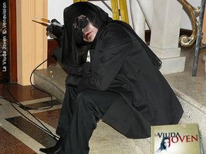
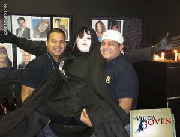
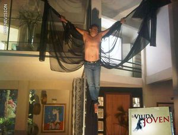

La viuda joven
 De: La Frikipedia, la enciclopedia extremadamente seria.
De: La Frikipedia, la enciclopedia extremadamente seria.
De la serie Programas de TV:
Expediente de la
puta baronesa
| Idioma original:
|
Venezolano del na'guara y mucho más.
|
| Creador:
|
Martin Janh
|
| Duración:
|
23 minutos mas 37 min de comerciales.
|
| No. Episodios:
|
142 capítulos contando las cadenas presidenciales.
|
| No. Temporadas:
|
2 (La segunda está en desarrollo hasta que el escritor compre dos cajas de cervezas)
|
| ¿Aún se transmite?:
|
Sí, en Vendevisión.
|
| Género:
|
Drama, amor, fantasias sexuales, terror y mucho más.
|
| Nivel de frikismo:
|
Altisimos, los asesinatos son iguales a los de Saw.
|
| Películas:
|
Por ahora no.
|
El asesino eres tú.
«!Ay no¡, ¡Me espelucooo!»
~ 'Domingo' asustado por algo.
«¿¡Sera que tengo la culpaaaaaaaaaaaaaaaaaaa!?»
~ 'Inmaculada' tras asesinar a otro marido.
«Esta mierda se parece a La mujer de Judas»
~ 'Un fan de la anterior novela' enojado por ver la misma trama.
«¡Maldita seas coño de tu madre!»
~ 'Un venezolano' insultando a Hugo Chavez cada vez que se encadena a la misma hora de la telenovela.
«¡Maldita seas coño de tu madre!»
~ 'Otro venezolano' insultando a Hugo Chavez cada vez que se va la luz a la misma hora de la telenovela.
«Fue una mierda el final de este telenovela, perdí mi tiempo viéndola.»
~ 'Un venezolano' enojado por el final que decidió el escritor para esta porquería.
La puta viuda joven es una Mariangel Grís, Verónica Schneider (familiar del creador de iCarly y esas porquerías) y Luis Gerónimo Abreu (familiar del pelotero venezolano), con las participaciones protagónicas de Juan Carlos Garchía García, Luciano Dalessandro, Miguel de Tigre León y Astrid Carolina Yesera Herrera. Esta nueva producción esta escrita por Martín Hahn y es inspirada en la vida de la baronesa española Carmen Cervecita del Bar.
Las grabaciones comenzaron el día lunes, 15 de noviembre de 2010. Se planeó estrenarla en pantallas el martes 15 de marzo del 2011 pero como el presidente querido de Venezuela decidió encadenarse ese mismo día y a la misma hora, el estreno de la novela quedó para el día siguiente (el miércoles 16 de marzo para los caídos de la mata)[1].
Sinopsis
La puta Viuda Joven es una buenota y misteriosa chisme de toda Venezuela al casarse con un viejo lleno de dinero llamado Von Parker. Hoy en día cuenta con una enorme chequera y una cuenta bancaria con miles de ceros a la derecha que heredó tras asesinar la muerte de sus tres últimos maridos que han muerto de formas muy extrañas. Sin familia conocida ni nada por el estilo, la baronesa "Inma Von Parker", es una zorra de extraordinaria belleza que le sirve para atraer a los pendejos millonarios y luego matarlos para hacerse más millonaria, por ser seria y tirarse a todos los hombres que pasan por la calle la han colocado como única sospechosa de la muerte de sus exmaridos pero como la policía de hoy en día no sirve para nada y la justicia es ciega jamás se la ha podido probar nada. Ale Ale Alejandro es un detective de la Unidad de Homosexuales Homicidios, es bisexual y está marcado por la traición de una mujer que le dejo el órgano vital destrozado por su sexualidad.
La bombonera baronesa es sospechosa de planificar la muerte de su cuarto marido. La prensa amarillista de Venezuela, la familia Jumboltd y la policía están luchando para ver quien se inventa un chisme para joderla, pero como el caso es asignado al detective Alejandro que sufre de erecciones constantes no logra conseguir ni una puta evidencia para meterle cadena perpetua por asesina.
Una telenovela llena de muchas fantasías sexuales y mucho morbo, donde cada personaje tiene un fetiche sexual diferente.
Elenco y Personajes
Personaje que contenga este signo "†" es porque le dieron guateque lo mataron en la novela.
- Mariangel
Grís Ruíz como Inlaculada Inmaculada Rojas, Baronesa y Viuda Von Parker: es la protagonista de la historia, es viuda porque ha asesinado a 6 esposos y la unidad de homicidios cree que todavía es pura coincidencia y que ella es inocente, es hermana menor de Abril Armas y quiere tener una relación sexual con Alejandro Abraham o más bien una orgía con él y su hermana, tiene una hija llamada Neta la tuvo cuando apenas tenia 13 años de edad (fue violada por Chuck Norris), ahora como es viuda y tiene un montón de dinero la quiere recuperar a toda costa; compite con Britney Spears para ver quien consigue más matrimonios en toda una vida por ahora va ganando ella.
Inmaculada y Abril compartiendo a
Ale Ale Alejandro.
- Verónica Schneider como
El Abril de las Armas: es la hermana mayor de la protagonista, le tiene envidia a su hermana menor porque ella tiene más dinero que ella, por esa misma razón le quito el exnovio de su misma hermana, es una perra bipolar y tartamuda, actualmente tiene un hijo del exnovio de su hermana el cual es Alejandro (no confundir con la canción de Lady Gaga).
- Luis
Anónimo Gerómino Abreu como Alejandro Abraham: Fue el exnovio de la protagonista y el actual esposo de la hermana de la misma (después dicen que los hombres somos una mierda), es el mejor detective de la UDH (Unidad de Homosexuales Homicidios), está encargado del caso de La Vida Joven y Viuda Negra para poder descubrir quien es el asesino, cuando vé a Inmaculada le da una erección por eso no ha podido concluir el caso.
- Juan Carlos
Garchía García como Jeremías Mérida Miranda: es el serio abogado friki de la protagonista, oculta los crímenes de Inmaculada por que él la ama pero el pendejo tipo no se da cuenta que está enamorado solo, se sospecha que el sea el asesino porque le encanta vestirse como una viuda.
- Luciano
Damessandro D' Alessandro como Christian Humboldt: es el antagonista de la telenovela según el escritor, pero es lo menos que ha hecho, es un tipo que le gusta follarse cuanta tipa pase por la calle, tiene un bebé y eso lo ha hecho cambiar de parecer, se ha enamorado de la pendeja de Vicenta y se sospecha que él es el asesino.
- Miguel de
Tigre León como Vespasiano Calderón: es el jefe de la UDH, es un viejo pedófilo que se cojió a La Pelusa en una borrachera y ahora por no protegerse la embarazó; es esposo de Ivana y padre de Sofía Carlota y Josué.
- Astrid Carolina Herrera como Ivana Humboldt de Calderón: Es una vieja decrepita parecida a Michael Jackson cuando se maquilla, le controla la vida a sus hijos y hace sentir miserable a cualquier que coma en la mesa de su comedor; es la enemigo número 1 de la puta de Inmaculada y es experta tocando el piano para atraer animales y practicar la zoofilia con ellos.
- Sonia Villamizar como Peggy
Mestiza Mestiza Pardo Pardo †: Era la fiscal de la UDH, tenia 43 años antes de ser asesinada por La Viuda Negra, su sueño antes de morir era ser follada por un tipo que tuviera un miembro de 23cm de largo, pero como el asesino se la echó al pico la mató se quedó virgen, ¡Que historia tan cruel!.
- Iván Tamayo como Simón
Carpintero Madero: Un viejo que tiene un hijo, se enamora de una detective que le hace la vida cuadritos pero como está enamorado no le importa un carajo si el es penetrado por su propia esposa.
Yelena Maciel "abusando" un poquito del maquillaje.
- Yelena Maciel como Ruth Luna (La Pelusa o la
Pelúa): Es una chica de unos 17 años que cuando era joven le gustaba tener sexo con viejos. Tiene un hijo con Vespasiano después de esa noche loca, ahora su mejor amiga de orgías "Vicenta" lo adoptó, se masturba frecuentemente atrayendo todo el rating posible.
- Antonio Delli como Julio Castillo: Es un tipo que fue detective de la UDH pero como ahora está viejo y los dientes los anda regando por toda su casa lo liquidaron para no gastar dinero en el servicio del dentista. Se sospecha de que el sea el asesino, tiene una linda hija llamada Julie que le gusta jugar muñequitas con su padre a pesar de que ella tiene 19 años.
- Carlos Mata como
Demonio Ángel Abraham: es el papá de Alejandro, un anciano (ya el viejo lo he usado mucho) pedófilo que le encanta tener a sus nueras y yernos en su casa, no tiene esposa por que la que tenía murió o fue asesina (todavía no se aclara), le gusta dar consejos y blowjobs a sus compañeros de trabajos.
- Rafael Romero como Tirso Damasco: El psiquiatra de la UDH, se enamora de Peggy la difunta fiscal pero como la matan decide enamorarse de su hermana pero como también la matan decide enamorarse de la nueva fiscal de la UDH pero como
también la matan es puta no quiere formalizar la relación.
- Carlos Felipe Álvarez como Josue Calderon Humboldt: Es el hijo de Vespasiano y de Ivana, un cristiano-evangélico-judío que desea convertir a La Pelusa en una linda cristiana-evangélica-judía pero como no logra convertirla la embaraza para formalizar la relación con ella y así convertirla a la fuerza como manda la iglesia.
 La Viuda Negra preparada para matarte.
- La Beba Rojas como Vicenta Palacios de Humboldt: Es una loca de barrio que sufre de trastornos mentales cuando se encuentra en una situación difícil o en altos niveles de estrés, es la esposa de Federico, ella le lava los pies, le hace el baño, se pone en 4, le hace el té, etc.
- María Antonieta Duque como Iris Fuenmayor (Vilma Bravo): Es la mejor detective de la UDA (Unidad de Alimentos), ella es contratada por Vespasiano para
hacerle la noche espiar a Simón en todo lo que hace en la fábrica de chocolates. Su único interés es follarselo a ver que información le saca.
- Javier Vidal Pradas como Federico Humboldt: Hermano de Ivana, es un psicópata que no tiene personalidad propia y le gusta defenderse a espaldas de otra persona. Es el esposo de la buenota de Vicenta pero como a ella le gusta adoptar niños la dejó y decidió no enamorarse más de ella.
- Crisbel Enríquez como Claudia
Mestiza Mestiza Pardo Pardo †: Fue la hermana de Peggy, fue asesinada por La Viuda Negra cuando la secuestró y la metió en una auto para violarla pero como se resistió, el asesino tomó una piedra o un tubo (no me acuerdo bien) y cuidadosamente le abrió un hueco en la cabeza para ver que encontraba.
- Roberto Messuti como Matias Humboldt †: Fue el cuarto marido de la Baronesa Chiflada Von Parker, murió en manos de La Viuda Negra cuando su esposa le propuso jugar sexualmente a la escondidas y el asesino aprovechó para darle sus buenas noches y sus reyes magos.
- Carlos Cruz como Rogelio Galindez †: Este es el maricón que le prometió a Peggy follarsela para que supiera que es un buen orgasmo pero como la rechazó varias veces, el asesino lo secuestró, lo drogó, lo violó y lo mató por gay.
- Eleidy Aparicio como África
vete a las Porras: Esta es una de las razones por cual veo la telenovela, esta tipa está más buena que Jennifer Lopez ; Es una de las detectives sexys de la novela, gracias a dios el escritor no ha decidido matarla por que sino dudaré de su sexualidad. La Viuda Negra en sus ratos libres.
- Marjorie Magri como Karelis Abrahamm: Es la hermana del protagonista e intima amiga de Abril, es una típica niñera y violadora.
- Susej Vera como Macarena
Negra Black †: Fue la amante de Matías y la lame botas de la Baronesa, condenó su muerte cuando se acostó con el abogado friki de Inma y le dijo que lo había contagiado con una enfermedad venérea, la viuda negra decidió drogarla y matarla a golpes y luego envenenandola con semen de dragón. Fue la madre de Rebecca Black.
- Paula Bevilacqua como Grecia Burgos†: Es una machorra que le gusta dar golpes en los operativos policiales, es la novia de Christian y le gusta jugar a la Caperucita y al Lobo en la cama. La viuda joven la torturo (se la pego)
- Josette Vidal Restifo como Julie Castillo Humboldt: Es la prima e intima amiga de Sofía Carlota, ambas se secretean las cosas que pasan en sus casas, le gusta jugar las muñequitas y PlayStation 3, fue secuestrada una vez por La Viuda Negra, supuestamente la iba a matar pero se escapó justo en el momento cuando su padre la rescató.
- Sheryl Rubio como Sofía Carlota Calderón: Es la come flor de Somos tú y yo, hace el papel de una adolescente que está cansada de que la loca de su madre le controle la vida, se enamora del tipo de abajo pero como le lleva 13 años más que ella decide luchar por él aunque su madre la desherede y la deje en la calle
pendeja.
- Claudio de La Torre como Enmanuel Madero: Es el hermano del viejo que tiene un hijo, este es el
hijoeputa tipo que se enamora de Sofía Carlota pero como es más viejo que ella decide enamorarse de Abril a ver que consigue. La Viuda Negra trató de matarlo una vez pero no lo logró, como dice el dicho "Hierba mala nunca muere".
- José Luis Useche como Domingo Parada: Es el gay oficial de la telenovela, siempre se expresa de una manera tan jodida que cada vez que sintonizas el canal siempre te "espelucas" como él. Ayúdanos a contactar con el escritor de la novela para que él sea la próxima víctima del asesino.
- Aileen Celeste como Vanessa Humboldt de Castillo †: Era la segunda fiscal de la UDH y la madre de Julie (esa la que le gusta jugar a las muñequitas después de vieja), ella sabía quien era La Viuda Negra pero decidió suicidarse cuando el asesino le dijó "O matas a Ivana o
le entrompo mató a tu hija", así que decidió autosuicidarse
- Ray Torres como Orlando †: era otro detective de la UDH pero La Viuda Negra lo mató pa'que sea serio.
- Stephanie Cardone Fulop como Sonia: Es la empleada y mano derecha de la zorra de Inmaculada, si su jefa la manda a tirarse de un edificio ella lo hace sin problemas. Se sospecha de que ella sea el asesino.
- César Flores como Pedro: Es el empleado y mano derecha de la zorra de Inmaculada, si su jefa le manda a tirarse de un edificio él lo hace sin problemas. Se sospecha de que el sea el asesino.
- Eva Blanco como Elda: Es una vieja chismosa que trabaja en la mansión Humboldt, se sabe todos los chisme tanto de su barrio como de toda Caracas, sospechamos de que ella escriba en la Frikipedia.
Actuaciones especiales
- Carlos Guillermo Haydon como Thomas Rulfo †: Es el 5to marido difunto de la Baronesa, un cantante muy parecido a Ricky Martin por lo gay. Murió en manos de la Baronesa cuando filmaba parte de su videoclip.
- Diany Marcoccia como Jeanette "Netta" Calderón Humboldt: Es la hija perdida de Inmaculada y Chuck Norris, es tán ladrona que es capaz de robarte tus pantalones mientras lees este articulo.
- Pakriti Maduro como Clarisa: Es una loca que se hizo pasar por la verdadera Viuda Negra pero la UDH logró atraparla cuando estaba violando a uno de los detectives.
- Jean Carlos Simancas como El Peluo†: Es el padre adoptivo/biológico de La Pelusa (¿porque crees que se llaman el Peluó y la Pelua?), sabe todo lo suficiente sobre Inmaculada y Abril como para destruirlas. Es el 7° marido de la Zorra Von Parker. La viuda negra lo mato sacandole los ojos
para venderlos en la carniceria un dia antes de que el denunciaria a ella y la otra puta de su hermana.
- Beatriz Vázquez como Rita †: Era una policía de la UDH, murió cuando entró un psicópata a la unidad amenazando a todo el mundo y se ganó un
pepazo balazo.
- Jaime Araque como Salvatore Bonvicini †: El 6to marido difunto de la Baronesa,
 Así murió el sexto
pendejo esposo de la Baronesa.
- José Vieira como Denis Rodríguez†: Es un periodista pornográfico. No dejaba tranquilo a la viuda negra porque queria una
orgia entrevista con las viudas negras
- Emma Rabe como Dr. Arrechero: Es la nueva fiscal de la UDH, salió embarazada por un gay (según los investigadores de Laura Bozzo), se enamoró de Tirso.
Culpables
- Viuda negra maestra = Abril Armas, se convierte en la viuda negra maestra por el simple hecho de proteger su
puta hermana menor, Inmaculada, también por tenerle envidia a esta por su riqueza.
- Viuda negra ejecutora = Enmanuel Madero, se convierte en la viuda negra ejecutora para hacerle un homenaje a su madre quien se convirtió en viuda cuando murió su esposo. Enmanuel la quería mucho así que para homenajearla, mataba a las personas vestido de viuda negra. También porqué estaba pendejamente enamorado de Abril.
- Viuda negra asistente = Vicenta Palacios de Humboldt, se convierte en la viuda negra asistente para pagarle los favorcitos que le hacía Abril (quien sabe de qué favorcitos son).
- Cómplice = Jeremias Miranda, se convierte en cómplice por celos de los maridos de Inmaculada.
- Ayudante = Macarena Black, se convierte en ayudante del complice por tratar de
violar matar a Inmaculada en una ocasión.
Razones de los asesinatos y su descripción
- Pedro José: Fue el primer marido de Inmaculada. Éste, la violó cuando era una jovencita pero hay que aclarar que ella era muy puta desde ese entonces, y quedó embarazada. Este hombre muere por manos de Abril, para defender a su hermana, supuestamente.
- Barón Von Parker: Murió envenenado y cayó de las escaleras. Se culpó a Inmaculada de su muerte pero en realidad fue Jeremías quien lo mató por celos.
Caca Popo: El segundo marido de la Viuda Joven, muere a manos de Jeremías. Nuevamente culparon a Inmaculada.- Leonel Pérez: Murió a manos de Julio cuando éste trató de matar a Inmaculada. La Baronesa lo contrató en sus empresas, y la aterró persiguiéndola por su casa con una muñeca, por lo tanto Inmaculada le clavó un abrecartas en el cuello para defenderse pero Julio finalmente lo mató.
- Peter Von Parker: Muere a manos de Alejandro Abraham, el cual fue engañado por Inmaculada. Le impactó una bala y murió cayendo del balcón, pero finalmente se sabe que la viuda negra lo violó y lo mató e hizo todo este show para quitárselo de encima.
- Matías Humboldt: Cuarto marido de la Viuda Joven. Murió a manos de Macarena Black, la cual fue enviada por La Viuda Negra para hacerle un trabajito.
- Peggy Mestiza Mestiza: La Viuda Negra
se la coge la mata, ya que ella tenía en su poder unos condones del futuro documentos en donde se encontraba el pasaporte del verdadero asesino y con eso ella podía revelar su identidad. El asesino la mata ahorcándola con un fular negro en su propio carro.
- Claudia Mestiza Mestiza: La matan porque ella había encontrado en el apartamento de Peggy unas copias de aquellos documentos que la misma Peggy tenía en su poder cuando la mataron, además era una pendeja.
- Rogelio Borrachindez: Lo matan por simple odio a la UDH y para hacer sufrir a Vespasiano, además era un borracho parrandero.
- Macarena
Negra Black: La matan porque ella era cómplice de los asesinos y al querer escribir la confesión, La Viuda negra le inyecta el veneno y la golpea con una piedra.
- Vanessa: En realidad ella se suicidó, ya que los asesinos la obligaron a matar a Ivana a cambio de su hija, pero no pudo y se clavó la inyectadora con el veneno.
- Grecia Burgos: La matan por simple odio a la UDH y para hacer sufrir a Vespasiano, además era novia del asesino (Enmanuel) pero como no le paró bolas, él decidió matarla.
- Orlando: Lo matan por tratar de meter presa a La Baronesa.
- Jeremias Mérida: Las Viudas Negras lo matan el hospital por mentiroso y por revelar gran parte de la verdad sobre los
travestis asesinos
- Pascual Bonvichini: Lo matan ahorcándolo en el ascensor de sus empresas por tratar mal en público a La Baronesa y por prometerle a Abril una clínica pero como no le cumplió un coño, la viuda negra se lo hecho al pico.
- Salvatore Bonvichini: Lo matan inyenctandole el veneno por el culo por simple odio a La Baronesa.
- Salomón Prum: Lo matan sacandole los ojos por tratar de matar a Abril y regalarle las muñecas sin ojos a La Baronesa.
- Vicenta Palacios de Humboldt: Ella fue la Viuda Negra asistente. Ella fue capturada por la UDH en la Mansión Humboldt luego de atacar a su ex esposo Federico. Se suicida inyectándose el
semen veneno y muere en la sala de interrogatorios.
- Enmanuel Madero: Para sorpresa de toda Venezuela, resultó siendo la otra viuda. Confesó en su lecho de muerte que él era la Viuda Maestra, lo cual era totalmente falso. Enmanuel era otro ayudante de la verdadera Viuda Maestra, Abril Armas. En el capítulo final revela ser un hijo bastardo pero muy bastardo de Vespasiano Calderón quien tiene la costumbre de dejar hijos regado por toda Venezuela con una tal Nieves, pero él lo rechazó así que empezó a asesinar a todos los miembros de la UDH para vengarse de su padre. Vespasiano le dispara un par de veces y se inyecta el veneno acabando con su vida.
Todas las víctimas fueron asesinadas por Enmanuel quien era la viuda negra jalabola ejecutora quien hacía todo lo que la viuda negra maestra le decía Abril, excepto Matías quién fue asesinado por Macarena en un hotel.
Audiencia
A pesar de que la mayoría de los venezolanos no tenía nada que hacer en vacaciones, todos se pusieron de acuerdo para ver la novela ya que se encontraba en su semana final y quería saber quién era el puto asesino que se echaba al pico a varios personajes de la novela. Esta porquería novela es una de las grandes producciones nacionales que tiene Noteven. Es uno de los raiting más alto para una telenovela en RCTV).
Capítulos
Según el escritor esta mierda novela tendría 120 capítulos, pero como siempre cuenta todas las noches con el apoyo de su puto público decidieron alargarla a 140 capítulos. Cada capítulo se centra en el asesino y recoge putas pista para descubrir quien se esconde tras esa mascara que se ha echado al pico a unos cuantos personajes. La cronología de las porquerías creaciones de Hanh son (temporadas o como quieras tomarlo)
- La Pecadora Angelical.
- La Mujer de Judas.
- La
zorra Estrambótica Anastasia.
- La
puta Viuda Joven.
¿Sabias que...
- ...Mariangel Gris es una puta?
- ...La Viuda Negra mata y no la convierte en asesino?
- ...Ya te dije que Mariangel es puta?
- ...Lunes es un día mientras que Domingo es un personaje de esta historia?
- ...cada 4 días de novela el presidente se encadena para dar un especial de lo que pasó?
- ...todo corazón oculta un secreto?
- ...este artículo tiene más información que el artículo de La Wikipedia?
- ↑ http://www.todotnv.com/hoy-gran-estreno-de-%E2%80%9Cla-viuda-joven%E2%80%9D.html
Autor(es):
- Fordus
- Harry El del Pote
- Genericool
- Espectrus
- SeñorMariguana
- JoseSillvera
- Thate
- Irbbl
Frikipedia 2005-2016, Licencia
GFDL 1.2 - Extraído por FrikiLeaks